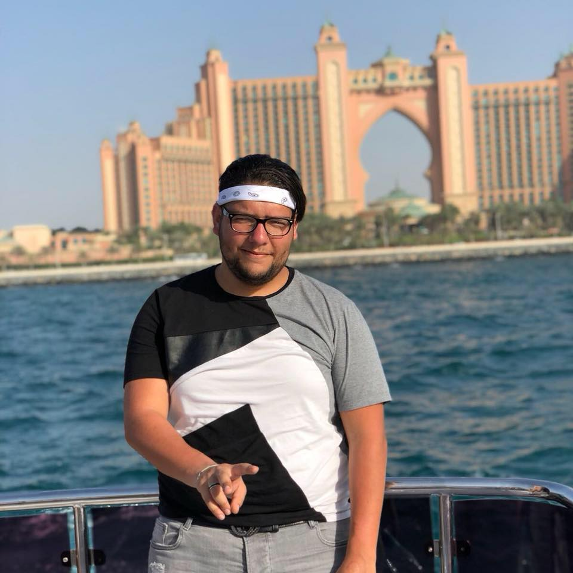

<html>
<head>
<style>
    
    body {background-color:darkgray;}   
    h1,h2,h3,h4 {color: red;}
    h1,h2 {font-family:fantasy;
        font-size: 250%;
        
    }
    h3,h4 {font-family: fantasy;
    font-size: 150% }
    
</style>    
</head>
</html>
  
        <h1>ik stel me voor</h1>
        <h2>Wat heb ik gevolgd tijdens het secundair ?</h2>
        
        <!--
            MADE WITH <3 AND JAVASCRIPT
        -->
        
        <p>
            Ik heb mijn 3 eerste jaren secundair in het Sint-Niklaasinstituut gevolgd in de richting ASO moderne wettenschappen. Daarna heb ik 1 jaar gevolgd in het Onze-Lieve-Vrouwinstituut daar heb ik handel gevolgd, ik vond handel niet zo interessant dus heb ik van richting verandert en ben ik naar elektromechanica gegaan. Dat heb ik in het KTA halle gevolgd. Dan ben ik daar afgstudeerd in het richting elektromechanica.
        </p>
        
       
        <p>
            Nu ben ik in het odisee en volg ik het richting Toegepaste informatica.
        </p>
        
       
        
        <h3>Mijn favoriete spel</h3>
        <p>
            Mijn favoriete spel is FIFA 19 .
        </p>
        
        
            
        
       
        <h4>Een paar foto's van mij </h4>
        <a href="images/zakaria.jpg">
            </a>
        
        <h5> klik op de foto om een grotere te hebben.</h5>
           
        <p>
            
        </p>
        
        
        <a href="hobby.html">klik hier op voor moijn hobby te zien</a>
       